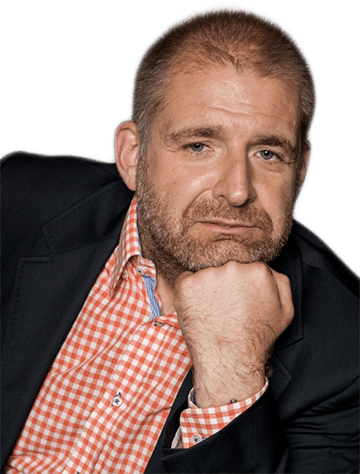

<section class="main-section">
  <div class="container">
    <h4 class="main-section__header font-bold">
      O mnie
    </h4>
    <div class="about-me__wrapper clearfix">
      <div class="about-me__image-wrapper">
        
      </div>
      <p class="about-me__text font-bold">
        <span class="accent">Poznańczyk</span> od kilkunastu pokoleń z wszystkimi tego wadami.
        Jestem trochę <span class="accent">łasuch</span>, trochę z Bałkańską duszą,
        mały <span class="accent">podróżnik</span> lubiący czasami "off the beaten tracks”.
        Zainteresowany współczesną historią polityczno-społeczną.
        Czasami <span class="accent">uparciuch</span>, z  czasami "niewyparzonym językiem",
        jak przystało na Byka. Zdarzyło mi się współpracować
        przez kilka lat z <span class="accent">Janiną Ochojską</span> oraz
        <span class="accent">Polską Akcją Humanitarną</span> jako wolontariusz i było to fajne doświadczenie.
        Uwielbiam: <span class="accent">Loisa de Funes</span>, Absolutely Fabulous,
        Keeping Up Appearances no i "Wojnę domową"
      </p>
    </div>
  </div>
</section>
